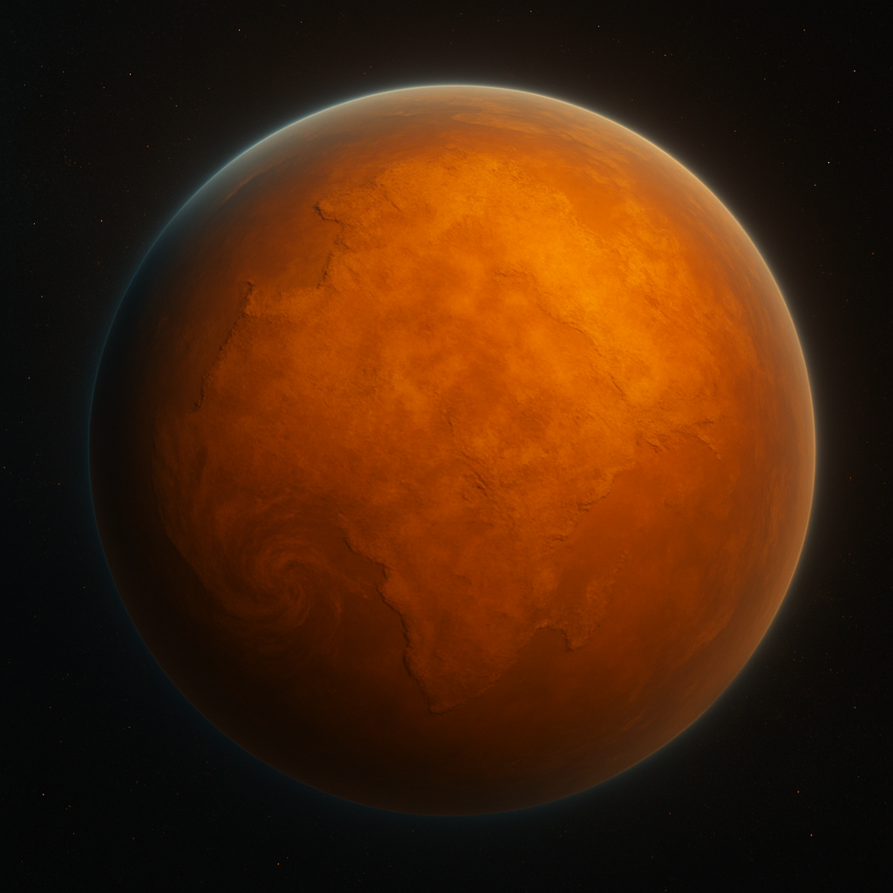

Description
Status: Annihilated (~-19,900 AE)
Classification: High-Gravity Death World
Sun: orange star
Moon: none
Korranthis was a hostile world where survival demanded near-supernatural adaptation. Its people evolved dense musculature, resistance to toxins, and heightened senses. Kor—later known as Vear—was taken from this planet before its destruction. The official cause of annihilation is listed as a meteor impact. However, rumors persist of an unofficial file, Project Silent Seed—a covert Authority operation suggesting the strike was engineered. This remains doubtful, as such an act would violate the Rule of Intent.
The sky above Kor’s world was never blue.
Instead, it burned with the deep, living glow of amber, as if the air itself had been poured from molten sap. Sunlight filtered down from a distant orange star, thick and low in the heavens, casting everything in tones of honeyed gold and rusted bronze. The light was not soft—it had weight, pressing against the land like a slow breath.
The atmosphere shimmered with fine iron-rich dust suspended in the air, catching the light like powdered fire. Windstorms, common and sweeping, whipped the dust into rolling curtains that shimmered in warm tones—orange, umber, copper—never quite settling. Even shadows weren’t truly dark here; they were just duller shades of gold.
The terrain matched the sky—jagged outcroppings of oxidized stone, ridged with red veins, sloped across the land like the bones of ancient titans. Cracked, sun-blasted valleys stretched for miles, littered with glinting crystals and rust-colored sand that glowed softly even in twilight.
In the distance, towering rock spires punched upward into the haze, their silhouettes haloed by the amber glow. And above all, that ever-present sky—a warm, suffocating dome of color, both beautiful and inescapable.
To Kor, it was home